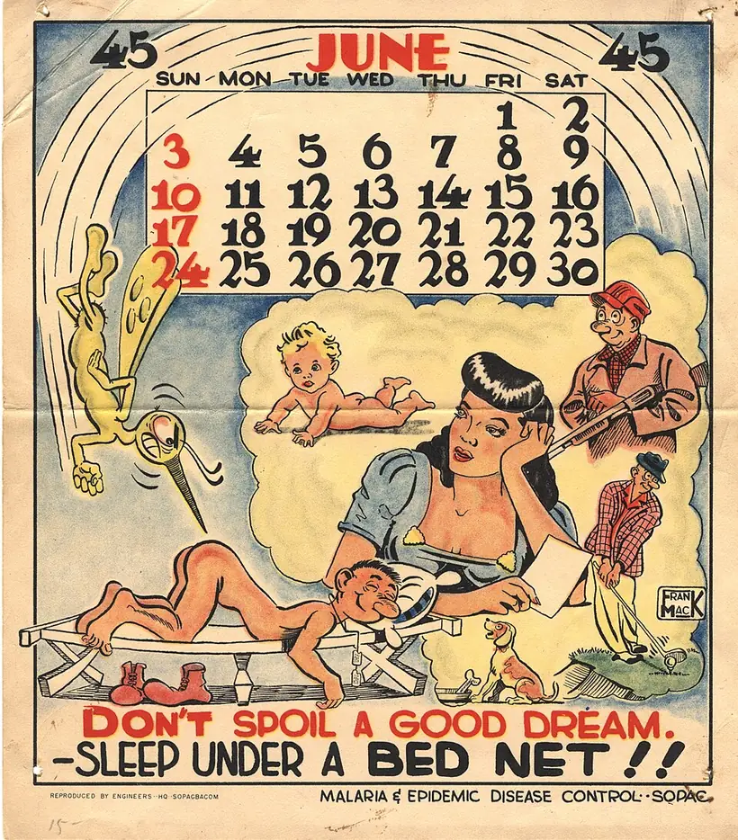
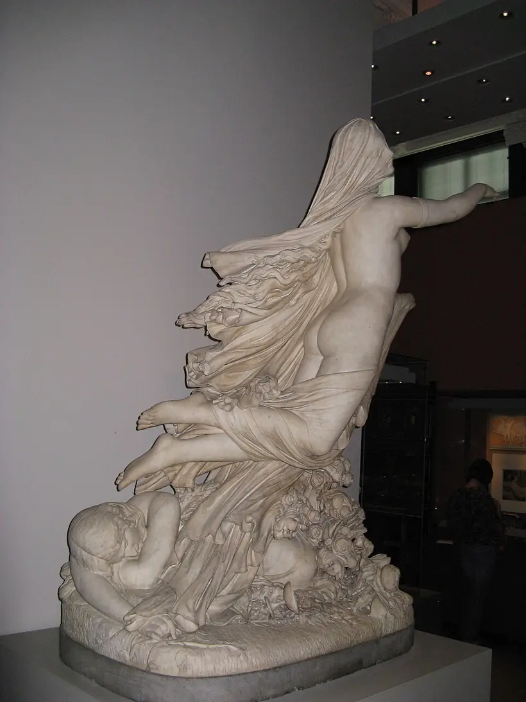
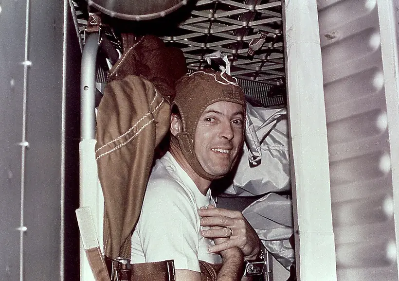

The experience
Déjà rêvé is the feeling that a present experience has been dreamed before: not merely familiar, but previously dreamt. It differs from déjà vu in that the person attributes the familiarity to a dream rather than to an unspecified earlier experience.
Maps, diagrams and images






It is common, especially in young adults, and it is often reported with a sense of significance — the dream is remembered only at the moment it seems to come true.
The explanations
The leading account is memory-based. Dreams are frequent and largely forgotten; a waking scene that shares a fragment of content can trigger a sense of prior experience, and the attribution to a dream is a plausible reconstruction rather than a recollection. The dream is often 'remembered' only after the event, which is the critical detail.
There is no evidence for precognitive dreams. Tests that require a dream to be recorded and dated before the event have not produced above-chance matches, and the anecdotal literature relies on the ones that seemed to fit.
Documented: the experience is common and distinct from déjà vu in how it is attributed.
Documented: dreams are frequent, fragmentary and poorly recalled.
Supported: a memory-construction account, in which the dream is recalled at the moment of the event.
Not established: any predictive dream, in any controlled test.
The honest label: live debate about the mechanism, with no support for the precognitive reading.
Why it is in the archive
Because it is the archive's neatest case of a feeling that seems to prove something and does not: the sensation of having dreamed it is real, and the sequence of events it implies is not.
Open resources on this topic
- PapersOpen-access articles: DOAJ · PubMed Central · Internet Archive Scholar
- BooksPublic-domain and borrowable copies: Open Library · Project Gutenberg · Google Books · Internet Archive
More images
Cite this page
Momin, S. (2026). Déjà Rêvé. The Larger World Archive. https://drsamonline.github.io/LARGE_GLOBE/deja-reve.htmlMomin, Sohil. “Déjà Rêvé.” The Larger World Archive, 2026, https://drsamonline.github.io/LARGE_GLOBE/deja-reve.html.Momin, Sohil. “Déjà Rêvé.” The Larger World Archive, 2026. https://drsamonline.github.io/LARGE_GLOBE/deja-reve.html.@misc{dj2026deja,
author = {Momin, Sohil},
title = {Déjà Rêvé},
year = {2026},
howpublished = {The Larger World Archive},
url = {https://drsamonline.github.io/LARGE_GLOBE/deja-reve.html},
note = {Last reviewed 20 November 2026}
}Last reviewed 20 November 2026 · Corrections policy · this page is not peer reviewed
Sources for this page
- Wikipedia, “Déjà vu” — the family of experiences and the theoriesen.wikipedia.org
- Wikipedia, “Dream” — recall and forgettingen.wikipedia.org
- Wikipedia, “False memory” — how a memory is reconstructeden.wikipedia.org
- Wikipedia, “Precognition” — the claim and the testsen.wikipedia.org